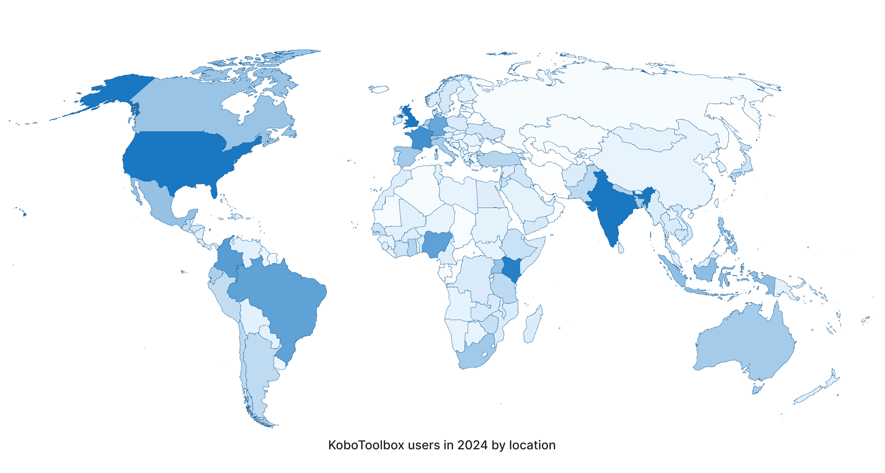

Search the knowledge base, browse our resources, and visit our forum for more detailed information
Last updated: 9 Jun 2025
Lire en français | Leer en español | اقرأ باللغة العربية
KoboToolbox makes high quality data accessible to social impact organizations worldwide. Designed by data collection practitioners specifically for challenging settings, KoboToolbox is easy to use, adaptable, and resource efficient.
KoboToolbox is hosted and maintained by the international nonprofit organization Kobo. Our mission is to empower individuals and organizations around the world with high quality data collection tools for creating data-driven social impact.
Read more about our mission.
KoboToolbox is the most widely used data collection tool for humanitarian action, development, peacebuilding, human rights, environmental protection, and other social impact initiatives. To support our nonprofit users, we provide our tools for free under the Community Plan. We also offer advanced services and upgrades for large organizations with high volume and complex data collection needs.
To learn more about how organizations around the world are using KoboToolbox, visit our blog.

In addition to the Help Center, users can visit the Community Forum to ask questions and share ideas. For a comprehensive introduction to data collection with KoboToolbox, users can enroll in our online KoboToolbox Essentials Course. Online and in-person training sessions are also available for teams.
Learn more about our training services.
KoboToolbox permet aux organisations à impact social du monde entier d’avoir accès aux données de grande qualité. Conçu par des spécialistes de la collecte de données, en particulier pour des environnements difficiles, KoboToolbox est facile à utiliser, adaptable et permet une utilisation efficace des ressources.
KoboToolbox est hébergé et administré par l’organisation internationale à but non lucratif Kobo. Notre mission est de fournir aux personnes et aux organisations du monde entier des outils de collecte de données de grande qualité pour créer un impact social axé sur les données.
En savoir plus sur notre mission.
KoboToolbox est l’outil de collecte de données le plus utilisé pour l’action humanitaire, le développement, la consolidation de la paix, les droits de l’homme, la protection de l’environnement et d’autres initiatives à impact social. Pour soutenir nos utilisateurs sans but lucratif, nous fournissons nos outils gratuitement dans le cadre du Community Plan (Plan communautaire). Nous proposons également des services plus performants et des extensions pour les grandes organisations ayant des besoins de collecte de données volumineux et complexes.
Pour en savoir plus sur la façon dont les organisations du monde entier utilisent KoboToolbox, visitez notre blog.
Outre le Centre d’aide, les utilisateurs peuvent visiter le Forum communautaire pour poser des questions et partager des idées. Pour une introduction complète à la collecte de données avec KoboToolbox, les utilisateurs peuvent s’inscrire à notre formation en ligne. Des séances de formation en ligne et en présentiel sont également proposées aux équipes.
En savoir plus sur nos services de formation.
KoboToolbox permite que los datos de alta calidad sean accesibles para organizaciones de impacto social a nivel mundial. Fue diseñado por personas profesionales de la recolección de datos específicamente para entornos desafiantes; KoboToolbox es fácil de usar, adaptable y eficiente en cuanto a recursos.
Kobo, es una organización internacional sin fines de lucro, que aloja y hace mantenimiento a KoboToolbox. Nuestra misión es empoderar a personas y organizaciones alrededor del mundo con herramientas de recolección de datos de alta calidad para crear un impacto social basado en datos.
Conocer más sobre nuestra misión.
KoboToolbox es la herramienta de recolección de datos más utilizada en la acción humanitaria, el desarrollo, la construcción de paz, los derechos humanos, la protección ambiental y otras iniciativas de impacto social. Para apoyar a nuestros usuarios sin fines de lucro, proporcionamos nuestras herramientas de forma gratuita bajo el Community Plan (Plan comunitario). También ofrecemos servicios avanzados y actualizaciones para las grandes organizaciones con necesidades de recolección de datos complejas y de gran volumen.
Para obtener más información sobre cómo las organizaciones alrededor del mundo utilizan KoboToolbox, visite nuestro blog.
Además del Centro de ayuda, las personas usuarias pueden visitar el Foro de la comunidad para hacer preguntas y compartir ideas. Para obtener una introducción completa a la recolección de datos con KoboToolbox, las personas usuarias pueden inscribirse en nuestro Curso de formación en línea. También se ofrecen sesiones de formación en línea y presenciales para equipos.
Obtenga más información sobre nuestros servicios de formación.
تجعل منصة (KoboToolbox) البيانات عالية الجودة متاحة للمؤسسات ذات التأثير الاجتماعي على مستوى العالم. فمنصة (KoboToolbox) مُصممة من قبل مختصين في جمع البيانات للتعامل مع الظروف الصعبة بشكل خاص، وهي سهلة الاستخدام، قابلة للتعديل، وفعالة في استخدام الموارد.
يتم استضافة منصة (KoboToolbox) وصيانتها من قبل المنظمة الدولية غير الربحية Kobo. ومهمتنا هي تمكين الأفراد والمؤسسات في جميع أنحاء العالم بأدوات جمع البيانات عالية الجودة لإحداث تأثير اجتماعي قائم على البيانات. اقرأ المزيد عن مهمتنا
تُعد منصة (KoboToolbox) أكثر أدوات جمع البيانات استخداماً في مجالات العمل الإنساني، التنمية، بناء السلام، حقوق الإنسان، حماية البيئة، وغيرها من المبادرات ذات التأثير الاجتماعي. ولدعم مستخدمينا غير الربحيين، نقدم أدواتنا مجاناً ضمن [الخطة المجتمعية Community Plan]. كما نقدم خدمات متقدمة و خطط محسّنة للمؤسسات الكبيرة التي لديها حجم كبير واحتياجات معقدة لجمع البيانات. لمعرفة المزيد حول كيفية استخدام المنظمات في جميع أنحاء العالم لمنصة (KoboToolbox) برجاء زيارة مدونتنا.
بالإضافة إلى مركز المساعدة، يمكن للمستخدمين زيارة المنتديات لطرح الأسئلة ومشاركة الأفكار. للحصول على مقدمة شاملة لجمع البيانات باستخدام منصة (KoboToolbox) ، يمكن للمستخدمين التسجيل في الدورة التدريبية عبر الإنترنت. كما تتوفر جلسات تدريبية عبر الإنترنت للفرق وبالحضور الشخصي. تعرف على المزيد حول خدماتنا التدريبية.
Did you find what you were looking for? Was the information clear? Was anything missing?
Share your feedback to help us improve this article!
KoboToolbox is maintained by Kobo Inc.